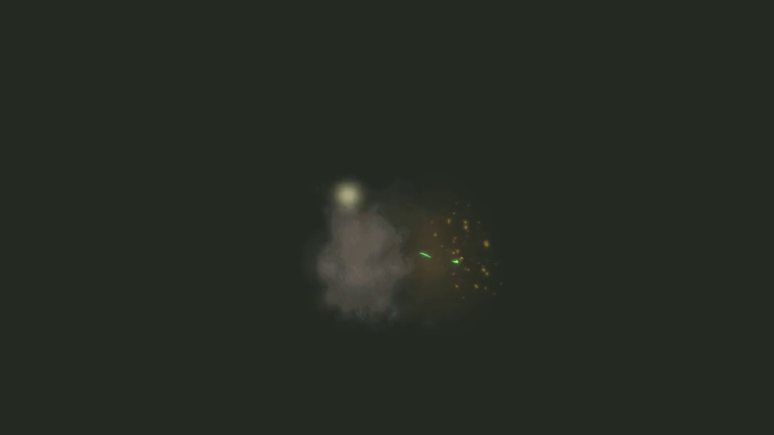

B02 / 028 · 163帧完整原序列
8 / 163 · 0.27s
21 / 163 · 0.70s
35 / 163 · 1.17s
48 / 163 · 1.60s
62 / 163 · 2.07s

75 / 163 · 2.50s
89 / 163 · 2.97s
102 / 163 · 3.40s
116 / 163 · 3.87s
129 / 163 · 4.30s
143 / 163 · 4.77s
156 / 163 · 5.20s